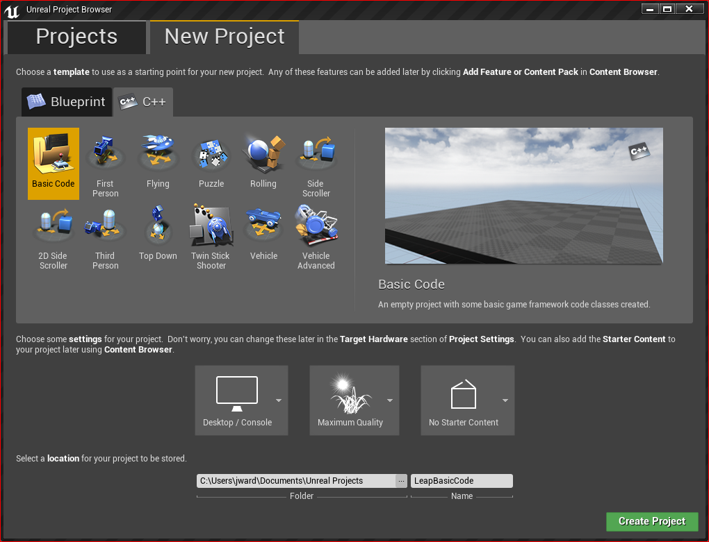
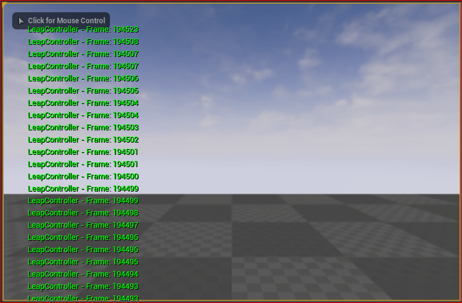

Tutorial: Using the Leap Motion API in Code¶
In this tutorial, we will walk through the steps necessary to directly access the Leap Motion API in C++ code.
You can use both the plugin classes and the full Leap Motion API in a code project. The difference is that the plugin classes transform the tracking data into the Unreal Engine coordinate system for you. Data directly from the API is in the Leap Motion frame of reference (right-handed, y=up axis) and units (mm).
The code in this tutorial is based on the LeapCodeExample project in the Leap Motion Unreal 4.7 Demo Pack
To get started, create a new code project:
In the Unreal Editor Project Browser, click the C++ tab of the New Project page.
Choose the Basic Code template.
Name the project and set other project properties however you like.
Click Create Project
Visual Studio opens.
Edit the project build script to declare dependencies on the Leap Motion plugin and API:
- Find your project build script (i.e. GamesProjectNameSourceProjectName.Build.cs).
- Add “LeapMotionController” and “Leap” to the PublicDependencyModuleNames list. The statement should look like this when you are done:
PublicDependencyModuleNames.AddRange(new string[] { "Core", "CoreUObject", "Engine", "InputCore" , "LeapMotionController" , "Leap" });Build the project (Ctrl-Shift-B).
Open the project in Unreal Editor.
Enable the Leap Motion plugin in the Pugins browser (under Input Devices) and restart the editor.
All the work in this example is performed in the LeapMotionDebugInfo class. This class extends the Unreal Actor class, primarily so that it has a Tick() function which is called every Unreal Engine update tick. To add the Debug Info Actor class:
In Unreal Editor, select the File > Add Code to Project... menu command.
The Add Code dialog opens.
Choose Actor as the parent class.
Click Next.
Set the name to LeapMotionDebugInfo.
Click Create Class.
Now we will override the Tick() function so that it prints the Leap frame number and hand and finger positions to the screen.
In Visual Studio, edit LeapMotionDebugInfo.cpp and add the necessary Leap Motion headers:
#include "LeapMotionControllerPlugin.h"
#include "LeapMotionDevice.h"
#include "Leap.h"
#include "LeapMotionTypes.h"
Next, in the Tick() function, get a pointer to the plugin LeapMotionDevice object, which you can use to access the Leap Motion tracking data:
void ALeapMotionDebugInfo ::Tick( float DeltaTime )
{
Super::Tick( DeltaTime );
FLeapMotionDevice* Device = FLeapMotionControllerPlugin::GetLeapDeviceSafe();
}
Before using the Device instance, we will check that the plugin has been able to connect to the Leap Motion service and hardware device using the ``IsConnected()`` function:
if (Device && Device->IsConnected())
{
//...
}
else{
GEngine->AddOnScreenDebugMessage(-1, 0.5f, FColor::Green, FString(TEXT("LeapController - No Data")));
}
This if statement can fail in the following conditions:
- There is no device object – the plugin isn’t present or isn’t enabled.
- The plugin cannot connect to the Leap Motion service – the service isn’t running or some other error has prevented the connection.
- A Leap Motion hardware device is not plugged in.
Now lets get the Leap Motion tracking data. First we need a Leap::Frame object:
Device->SetReferenceFrameOncePerTick();
Leap::Frame frame = Device->Frame();
The first statement here makes sure that the plugin updates the cached frame object for this tick. The Leap Motion software can produce data at a rate exceeding 100 frames-per-second. Calling SetReferenceFrameOncePerTick() ensures that every time you access the Leap data in your application you get the same data during the same Unreal Engine tick. The function has no affect after the first time it is called in the same Unreal tick, but you should always call it to make sure the cached frame is updated when appropriate. The second statement gets the actual cached frame.
To demonstrate the most basic access to the Leap Motion data, we will just print the frame sequence ID to the screen using Unreal’s Engine::AddOnScreenDebugMessage() function. So far your function should look like the following:
void ALeapMotionDebugInfo::Tick( float DeltaTime )
{
Super::Tick( DeltaTime );
FLeapMotionDevice* Device = FLeapMotionControllerPlugin::GetLeapDeviceSafe();
GEngine->ClearOnScreenDebugMessages();
if (Device && Device->IsConnected())
{
Device->SetReferenceFrameOncePerTick();
Leap::Frame frame = Device->Frame();
FString leapLabel = FString::Printf( TEXT( "LeapController - Frame: %u"), frame.id());
GEngine->AddOnScreenDebugMessage(-1, 0.5f, FColor::Green, leapLabel);
}
else{
GEngine->AddOnScreenDebugMessage(-1, 0.5f, FColor::Green, FString(TEXT ("LeapController - No Data" )));
}
}
Before running this code, we need to set the Actor object to start with tick enabled so that our Tick() function will get called. It is easiest to do this in the constructor:
ALeapMotionDebugInfo::ALeapMotionDebugInfo()
{
PrimaryActorTick.bCanEverTick = true;
PrimaryActorTick.bStartWithTickEnabled = true;
}
Finally, build the project and switch back to the Unreal Editor. Add your new LeapMotionDebugInfo class to a level and play. You should see a list of frame IDs printed to the screen:
Note that the frames are not consecutive. In this case the example is running on an older computer, so the Unreal Engine is running at a faster frame rate than the Leap Motion service. Hence, frequently two Unreal frames use the same Leap Motion frame.
To complete the function, we will just loop through the hands and fingers and print out the palm and finger tip positions. To do this, add the following code immediately before the statement which prints the frame IDs:
for (Leap::Hand hand : frame.hands())
{
for (Leap::Finger finger : hand.fingers()){
FString fingerLabel = FString::Printf(TEXT( " Finger %u: "), finger.id());
fingerLabel += finger.tipPosition().toString().c_str();
GEngine->AddOnScreenDebugMessage(-1, 0.5f, FColor::Green, fingerLabel);
}
FString handLabel = FString::Printf(TEXT( " Hand %u: "), hand.id());
handLabel += hand.palmPosition().toString().c_str();
GEngine->AddOnScreenDebugMessage(-1, 0.5f, FColor::Green, handLabel);
}
When you build and run this example now, note the hand and finger positions. Especially note that the coordinates are given in the Leap coordinate system, not the Unreal coordinate system. You can use the LEAPVECTOR_TO_FVECTOR() function to perform the translation on position coordinates (and the LEAPVECTOR_TO_FVECTOR_DIRECTION() for direction vectors). For example, we can add the Unreal coordinates for the finger tip positions to the string we print to the screen with the following code:
FString fingerLabel = FString::Printf( TEXT( " Finger %u: "), finger.id());
fingerLabel += finger.tipPosition().toString().c_str();
fingerLabel += " (" + LEAPVECTOR_TO_FVECTOR(finger.tipPosition()).ToString() + ")" ;
Note that if you need the post-transformed data from the Leap Motion, it is probably easier to start with the LeapMotionHandActor class and get the positions and orientations of the parts of a tracked hand from the child LeapMotionBoneActor instances.
For more information on the C++ classes in the API, see our C++ Language Reference and Programming guides.